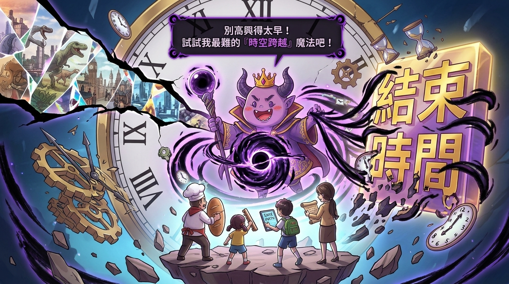

🏫 保良局田家炳小學
終極之戰
【魔王的最後反撲】
時光守護者，只差最後一步！
請在 90秒 內回答問題，
打敗吞時魔王，恢復世界秩序！
警告：若累積 3次錯誤 或超時，世界將陷入永恆混沌...
操作說明
- 請先點擊選擇一個答案。
- 如需更改，可點擊「取消」重新選擇。
- 確定答案後，點擊「確定」提交。提交後才會判斷對錯。
- 注意時間！限時 90 秒，倒數 10 秒時會亮紅燈警告。
- 答錯的題目必須重做，直到答對為止才能進入下一關。
- 你有 3 點生命值，累積答錯 3 次即告失敗。

問題區
回答區